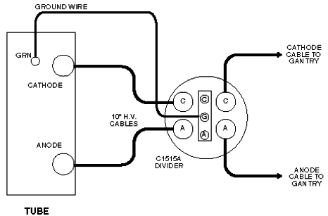

Operating Documentation
Direction 5112972-800, Rev# 2
CT Planned Maintenance Procedures
Operating Documentation |
| Required Persons | Preliminary Reqs | Procedure | Finalization |
|---|---|---|---|
| 1 | Timing Not Applicable | 30 mins | Timing Not Applicable |
Procedure Effectivity:
| Assembly: | HIGH VOLTAGE |
| Subassembly: | X-Ray Generation |
| Purpose: | HV Tank Feedback Resistors Calibration |
| Last Revised: | December 1996 |
| Item | Qty | Effectivity | Part# | Manufacturer | |
|---|---|---|---|---|---|
| Bleeder | 1 | - | - | - | |
| Ground Wire | 1 | - | - | - | |
| Oscilloscope | 1 | - | - | - | |
Switch OFF “X–Ray and Drives” power on the gantry.
Inside the Gantry:
| Always turn OFF the HVDC before the 120 VAC. Turning OFF 120 VAC power before HVDC power can result in equipment damage. | |
Switch OFF the HVDC (550) enable.
Switch OFF the axial drive.
Rotate the Tube to the 3 o’clock position.
Pin the Gantry.
Switch OFF the 120 VAC Gantry power.
Install the HV Divider between Tube and Tanks. Refer to Illustration 1.
| NOTE: | Place the HV Divider on a table or tube hoist, so the cables reach the tube. |
Illustration 1: HVDC Divider

Add a ground wire (minimum size of AWG 12) from Tube ground to Bleeder ground. Refer to Illustration 1.
| Always turn ON the 120 VAC before the HVDC. Turning ON HVDC power before 120 VAC power can result in equipment damage. | |
Switch ON the 120 VAC Gantry power.
Switch ON the HVDC (550) enable.
Switch ON “X–Ray and Drives” power on the gantry.
Reset the hardware.
Use an oscilloscope with 10X probes.
| NOTE: | If possible, try to plug the scope into the table 120 VAC outlet, to reduce the noise on the scope waveforms. Use an extension cord if necessary. |
Connect channel one to the anode output of the divider.
Connect the scope ground to bleeder ground.
Connect channel two to the cathode output of the divider.
Connect the scope ground to bleeder ground.
| NOTE: | In order to minimize bleeder–induced ripple on the KV waveform, connect a 30-foot Belden shielded twisted pair cable between the scope probes and the bleeder. |
Trigger channel one, positive, DC couple, trigger mode normal.
Channel one and two, 10v/div, time base 200ms.
Invert Channel two.
| NOTE: | Determine the type of kV board in the OBC. This procedure lists the names of components on the 46–321064G1–D kV board without brackets. This procedure lists the names of components on the 46–321198G1 kV board in [brackets]. |
Display the Generator Installation and Verification menu.
Select Bleeder Setup (DDC).
Verify/Set–up the following DDC parameters:
STATIC X–RAY ON
1 SECOND
1 SCAN
FOCAL SPOT LARGE
100 KV
50 MA
MONITOR ENABLE
Select [ACCEPT RX]
The Computer Displayed reading spec for the Cathode kV and Anode kV equals 50 _ 0.5 kV.
| NOTE: | If you use scope cursors to window the trace, position the Left Vertical Cursor to the Right of the Rising Edge of the waveform. Position the Right Vertical Cursor to the Left of the Falling Edge of the Waveform. |
Adjust the Cathode pot on the kV board, until the scope reading for the Cathode kV, and the displayed reading for the Cathode kV in the message log, fall within _ 0.5kV of each other.
Use the pot, labeled CA [CAKV, R316], on the kV board, to adjust the scope reading.
CCW decreases the scope kV.
CW increases the scope kV.
1/2 turn equals approximately 0.5 kV.
Record the results on FORM 4879.
Display the Generator Installation and Verification menu.
Select Bleeder Setup (DDC).
Verify/Set–up the following DDC parameters:
STATIC X–RAY ON
1 SECOND
1 SCAN
FOCAL SPOT LARGE
100 KV
50 MA
MONITOR ENABLE
Select ACCEPT RX
The Computer Displayed reading spec for the Cathode kV and Anode kV equals 50 _ 0.5 kV.
| NOTE: | If you use scope cursors to window the trace, position the Left Vertical Cursor to the Right of the Rising Edge of the waveform. Position the Right Vertical Cursor to the Left of the Falling Edge of the Waveform. |
Adjust the Anode pot on the kV board, until the scope reading for the Anode kV, and the displayed reading for the Anode kV in the message log, fall within _ 0.5kV of each other.
Use the pot, labeled AN [ANKV, R318], on the kV board, to adjust the scope reading.
CCW decreases the scope kV.
CW increases the scope kV.
1/2 turn equals approximately 0.5 kV.
Record the results on FORM 4879 (Data Record).
No finalization required.